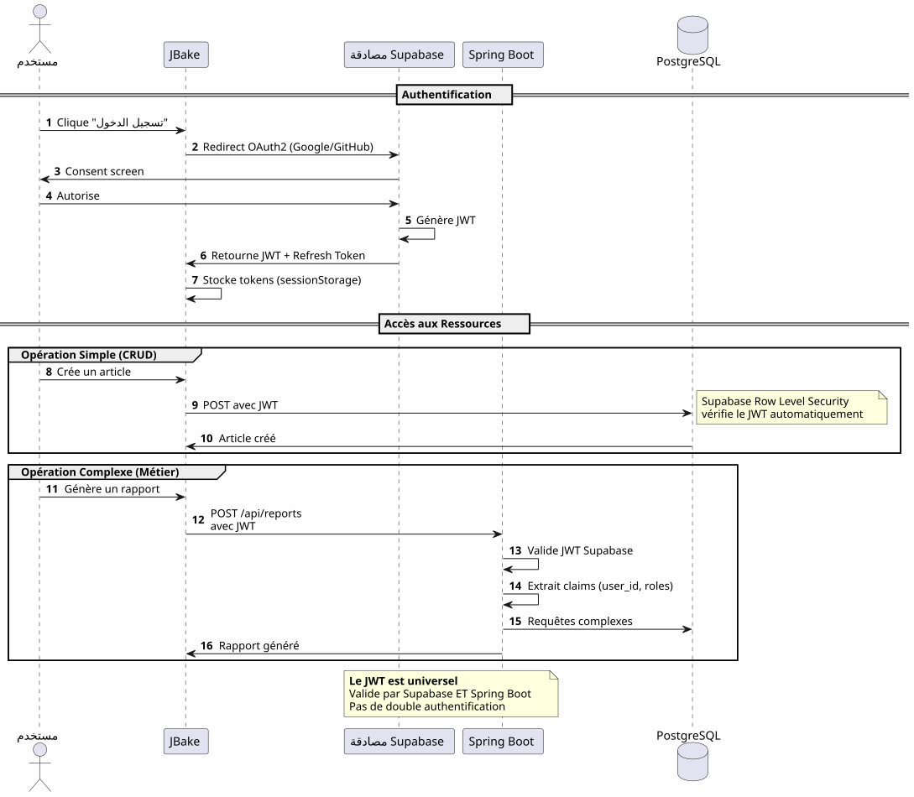
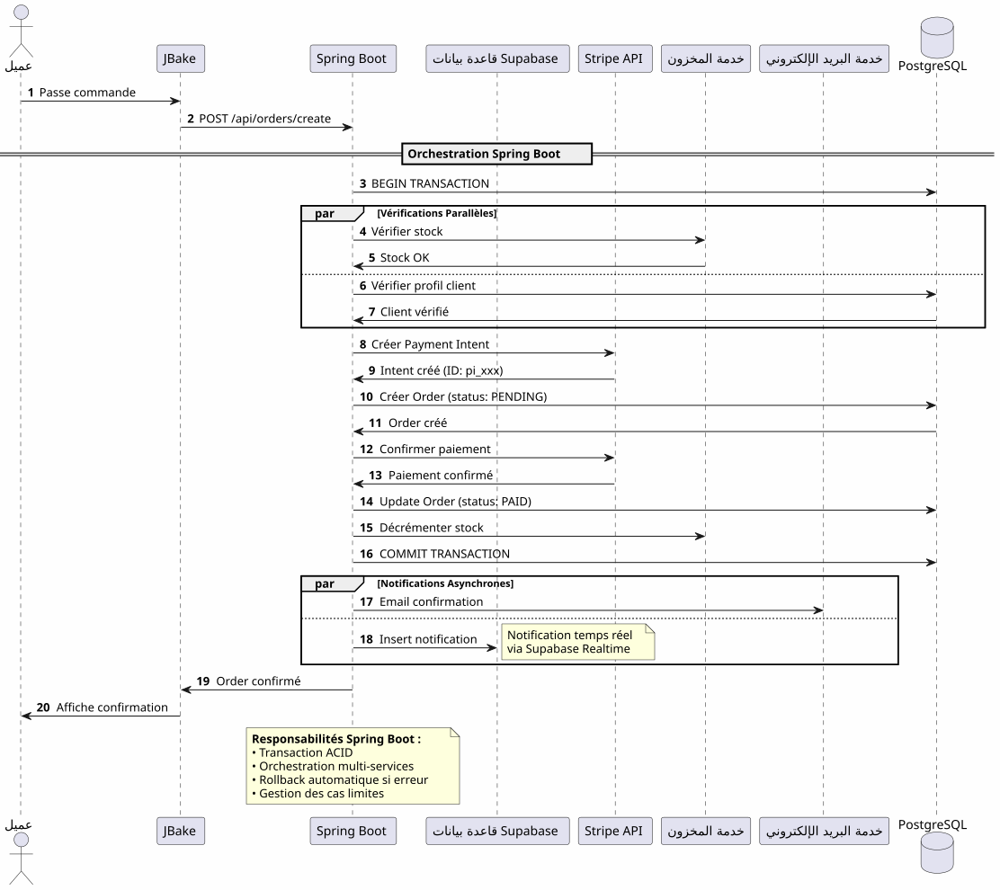

البنية المعمارية الهجينة: الأفضل من العالمين مع Supabase وSpring Boot
Publié le 14 January 2026
بدلاً من الاختيار بين بساطة Supabase وقوة Spring Boot، لماذا لا تجمع بين الاثنين؟ اكتشف بنية هجينة تستغل أفضل ما في كل تقنية.
- دقّ
-
[]
المعضلة الزائفة في العمارة الحديثة
عند بناء تطبيق حديث باستخدام واجهة أمامية ثابتة، غالبًا ما نجد أنفسنا أمام خيار ثنائي :
-
مراهنة كل شيء على حل Backend-as-a-Service(Supabase, Firebase) - بسيطة لكن محدودة
-
بناء خلفية كاملة(Spring Boot, Node.js) - قوي لكن معقد
هذا الاختيار هو معضلة زائفة. الهندسة المعمارية الهجينة تقترح طريقًا ثالثًا: استخدام كل تقنية حيثما تتفوق
رؤية معمارية
العمارة التقليدية: أحادية
في هذا النهج، حتى أبسط العمليات (قراءة مقال، إنشاء تعليق) يجب أن تمر عبر الواجهة الخلفية الخاصة بك. تدفع تكلفة التعقيد من اليوم الأول.
بنية BaaS : كل ممثل
على العكس، تسليم كل شيء إلى BaaS يكون مغرًا في البداية لكنه يظهر حدوده بسرعة عندما تصبح منطق العمل أكثر تعقيدًا.
البنية الهجينة: فصل المسؤوليات
العمارة الهجينة تفصل المسؤوليات بوضوح بناءً على التعقيد وطبيعة العمليات.
مبادئ التصميم
مبدأ 1 : ابدأ ببساطة، تطور بذكاء
Failed to generate image: PlantUML preprocessing failed: [From <input> (line 14) ]
@startuml
skinparam backgroundColor #FEFEFE
rectangle "المرحلة 1 : MVP" #LightGreen {
component "JBake + Supabase" as mvp
note right
✓ Développement en jours
✓ Coût : 0€
✓ Validation concept
end note
}
rectangle "المرحلة 2: النمو" #LightYellow {
component "JBake + Supabase
^^^^^
Syntax Error? (Assumed diagram type: component)
@startuml
skinparam backgroundColor #FEFEFE
rectangle "المرحلة 1 : MVP" #LightGreen {
component "JBake + Supabase" as mvp
note right
✓ Développement en jours
✓ Coût : 0€
✓ Validation concept
end note
}
rectangle "المرحلة 2: النمو" #LightYellow {
component "JBake + Supabase
+ Spring Boot (اختياري)" as growth
note right
✓ Logique métier émerge
✓ Premiers jobs planifiés
✓ Intégrations tierces
end note
}
rectangle "**المرحلة 3 : التوسع**" #LightCoral {
component "الهندسة المعمارية الكاملة" as scale
note right
✓ Orchestration complexe
✓ Performances optimisées
✓ Cache distribué
end note
}
mvp -down-> growth : Quand la complexité\nle justifie
growth -down-> scale : Optimisation\ncontinue
@enduml
لا تقم ببناء Spring Boot إذا لم تكن بحاجة إليه.ابدأ مع Supabase، أضف Spring Boot عندما يبرر التعقيد ذلك.
المبدأ 2: فصل حسب طبيعة العملية

المبدأ 3 : مصدر واحد للحقيقة
Failed to generate image: PlantUML preprocessing failed: [From <input> (line 17) ]
@startuml
skinparam backgroundColor #FEFEFE
database "PostgreSQL" as db #LightGray {
package "المخطط: auth (Supabase)" #LightGreen {
[users]
[sessions]
[identities]
}
package "المخطط: عام (مشارك)" #SkyBlue {
[articles]
[comments]
[profiles]
}
package "أنت مترجم محترف.
^^^^^
Syntax Error? (Assumed diagram type: component)
@startuml
skinparam backgroundColor #FEFEFE
database "PostgreSQL" as db #LightGray {
package "المخطط: auth (Supabase)" #LightGreen {
[users]
[sessions]
[identities]
}
package "المخطط: عام (مشارك)" #SkyBlue {
[articles]
[comments]
[profiles]
}
package "أنت مترجم محترف.
ترجم من fr إلى ar.
احفظ جميع أجزاء الكود المضمنة بين علامتي تنصيص (`...`) كما هي — لا تعدل محتوى العلامة أو مسافة أو موضعها.
قد يكون هذا النص جزءًا من جملة أكبر — ترجم هذا الجزء دون طلب سياق إضافي.
أخرج النص المترجم فقط — لا شرح، لا تعليق، لا مقدمة، لا بدائل، لا خيارات.
النموذج: الأعمال (Spring Boot)" #Coral {
[orders]
[payments]
[reports]
}
}
component "سوبابيس" as supabase #LightGreen
component "سبرينج بوت" as spring #Coral
supabase -down-> users : Gère
supabase -down-> sessions : Gère
supabase -down-> articles : Accède
supabase -down-> comments : Accède
supabase -down-> profiles : Accède
spring -down-> articles : Accède
spring -down-> profiles : Accède
spring -down-> orders : Gère
spring -down-> payments : Gère
spring -down-> reports : Gère
note right of db
**Avantages :**
• Pas de synchronisation complexe
• JOINs possibles entre tables
• Cohérence garantie
• Migrations unifiées
end note
@enduml
من خلال مشاركة نفس مثيل PostgreSQL، يعمل Supabase و Spring Boot على نفس البيانات دون مزامنة معقدة.
تنظيم التدفقات
التدفق 1 : المصادقة المركزية

نقطة رئيسية: عملية مصادقة واحدة، ومفتاح JWT واحد، يمكن استخدامه في كل مكان.
التدفق 2: تنظيم عملية عمل معقدة

ما يقدمه Spring Boot: تنسيق موثوق للعمليات المعقدة التي تتضمن عدة أنظمة مع ضمان معاملة
التدفق 3 : الوظائف المجدولة وعمليات المزامنة
Failed to generate image: PlantUML preprocessing failed: [From <input> (line 4) ] @startuml skinparam backgroundColor #FEFEFE participant "المجدول ^^^^^ Syntax Error? (Assumed diagram type: sequence) @startuml skinparam backgroundColor #FEFEFE participant "المجدول (Spring Boot)" as scheduler participant "خدمة التقرير" as report participant "PostgreSQL" as db participant "واجهة برمجة التطبيقات الخارجية" as api participant "خدمة البريد الإلكتروني" as email participant "تخزين Supabase" as storage == Job Quotidien : 2h00 == activate scheduler scheduler -> report : Déclenche génération rapport activate report report -> db : Récupère données\ndes dernières 24h db -> report : Dataset report -> report : Calculs & Agrégations report -> report : Génération PDF report -> storage : Upload PDF storage -> report : URL publique report -> email : Envoie aux admins\navec lien PDF deactivate report == Job Hebdomadaire : Dimanche 3h00 == scheduler -> report : Synchronisation externe activate report report -> api : Fetch données externes api -> report : Nouvelles données report -> db : Mise à jour tables report -> db : Nettoyage données obsolètes deactivate report == Job Mensuel : 1er du mois == scheduler -> report : Facturation activate report report -> db : Liste clients actifs report -> report : Calcul montants report -> api : Génération factures (Stripe) report -> email : Envoi factures deactivate report deactivate scheduler note right of scheduler **Impossible avec Supabase seul** Edge Functions non adaptées pour jobs longs et récurrents end note @enduml
ما يجلبه Spring Boot: وظائف مجدولة موثوقة مع إدارة الحالة، إعادة محاولة تلقائية، وتنفيذ مضمون.
مصفوفة القرار
متى تستخدم Supabase؟

متى تستخدم Spring Boot؟

أمثلة على الهندسة المعمارية حسب نوع المشروع
مدونة / بورتفوليو
الحكم: 100% Supabase يكفي وأكثر.
تطبيق SaaS
حكم: بنية هجينة ضرورية. Supabase للجزء الأساسي، Spring Boot للجزء الحرج (المدفوعات، الفوترة).
التجارة الإلكترونية
حكمSpring Boot ضروري. Supabase فقط للمصادقة والمكتالوج.
استراتيجية الهجرة التدريجية

التكاليف والاعتبارات التشغيلية
هيكل التكاليف
Failed to generate image: PlantUML preprocessing failed: [From <input> (line 7) ]
@startuml
skinparam backgroundColor #FEFEFE
package "التكاليف الشهرية المقدرة" {
rectangle "مرحلة MVP
(0-1000 مستخدمين)" #LightGreen {
^^^^^
Syntax Error? (Assumed diagram type: activity)
@startuml
skinparam backgroundColor #FEFEFE
package "التكاليف الشهرية المقدرة" {
rectangle "مرحلة MVP
(0-1000 مستخدمين)" #LightGreen {
[JBake (GitHub Pages): 0€]
[Supabase: 0€]
[Spring Boot: N/A]
note bottom: **Total: 0€/mois**
}
rectangle "مرحلة النمو
(1k-10k مستخدم)" #LightYellow {
[JBake (GitHub Pages): 0€]
[Supabase: 0€]
[Spring Boot (Cloud Run): 20-50€]
[PostgreSQL (si séparé): 0-30€]
note bottom: **Total: 20-80€/mois**
}
rectangle "مقياس المرحلة
(10k-100k مستخدم)" #LightCoral {
[JBake (Netlify Pro): 19€]
[Supabase Pro: 25€]
[Spring Boot (instances multiples): 100-300€]
[Redis Cache: 20-50€]
[Monitoring: 20€]
note bottom: **Total: 184-414€/mois**
}
}
note right of "مقياس المرحلة
(10k-100k مستخدم)"
À ce stade, les revenus
justifient largement les coûts
end note
@enduml
المسؤوليات التشغيلية
الخاتمة: التوازن المثالي
الهياكلية الهجينة Supabase + Spring Boot ليست تنازلاً، إنهاالتآزر.
المبادئ التي يجب تذكرها

متى تختار هذه المعمارية؟
✅ هذه المعمارية إذا:
-
أنت تريد أن تبدأ بسرعة (MVP في أيام وليس في أشهر)
-
أنت تتوقع زيادة في تعقيد العمل
-
أنت ترغب في تقليل التكاليف الأولية
-
تحب PostgreSQL وتريد مصدرًا واحدًا للحقيقة
-
أنت تحب Kotlin والكوروتينات لكود العمل
-
أنت ترغب في تجنب احتجاز البائع الكامل
❌ هذه المعمارية غير مناسبة إذا :
-
مشروعك بسيط وسيظل كذلك (مدونة شخصية → 100% Supabase كافية)
-
لديك مكدس خلفي مثبت تتقنه بالفعل
-
أنت تفضل الأحادي التقليدي
-
أنت بحاجة إلى .NET، Python، أو أي لغة خلفية أخرى
الرؤية الشاملة النهائية
Failed to generate image: PlantUML preprocessing failed: [From <input> (line 35) ]
@startuml
skinparam backgroundColor #FEFEFE
package "البنية الهجينة الكاملة" {
actor "المستخدمون" as users
rectangle "واجهة أمامية (ثابتة)" #SkyBlue {
[JBake / GitHub Pages]
note right: Gratuit, CDN global
}
rectangle "خلفية بسيطة (Supabase)" #LightGreen {
[Auth OAuth2]
[CRUD APIs]
[Storage]
[Realtime]
note right
Gratuit jusqu'à 50k users
Zéro configuration serveur
end note
}
rectangle "باك إند التجاري (Spring Boot)" #Coral {
[Orchestration]
[Jobs Planifiés]
[Intégrations]
[Transactions]
note right
Activé uniquement
si nécessaire
end note
}
database "PostgreSQL
^^^^^
Syntax Error? (Assumed diagram type: component)
@startuml
skinparam backgroundColor #FEFEFE
package "البنية الهجينة الكاملة" {
actor "المستخدمون" as users
rectangle "واجهة أمامية (ثابتة)" #SkyBlue {
[JBake / GitHub Pages]
note right: Gratuit, CDN global
}
rectangle "خلفية بسيطة (Supabase)" #LightGreen {
[Auth OAuth2]
[CRUD APIs]
[Storage]
[Realtime]
note right
Gratuit jusqu'à 50k users
Zéro configuration serveur
end note
}
rectangle "باك إند التجاري (Spring Boot)" #Coral {
[Orchestration]
[Jobs Planifiés]
[Intégrations]
[Transactions]
note right
Activé uniquement
si nécessaire
end note
}
database "PostgreSQL
مصدر الحقيقة الوحيد" as db #LightGray
users --> [JBake / GitHub Pages]
[JBake / GitHub Pages] --> [Auth OAuth2]
[JBake / GitHub Pages] --> [CRUD APIs]
[JBake / GitHub Pages] --> [Storage]
[JBake / GitHub Pages] --> [Realtime]
[JBake / GitHub Pages] --> [Orchestration]
[Auth OAuth2] --> db
[CRUD APIs] --> db
[Orchestration] --> db
[Jobs Planifiés] --> db
[Intégrations] --> db
}
note bottom of db
**Une seule base, deux consommateurs**
• Supabase pour le simple
• Spring Boot pour le complexe
• Aucune synchronisation requise
end note
@enduml
أفضلstwo العالَمين
هذه الهندسة المعمارية تمنحك :
�🚀 سرعة سوابيز
-
بدء في الساعات، وليس في الأسابيع
-
مصادقة OAuth2 في بضع نقرات
-
واجهات برمجة التطبيقات REST المُنشأة تلقائيًا
-
صفر تكوين الخادم
قوة Spring Boot
-
Kotlin و Coroutines للكود غير المتزامن الأنيق
-
تنظيم عمليات الأعمال المعقدة
-
المهام المجدولة الموثوقة
-
معاملات ACID مضمونة
-
النظام البيئي الكامل لـ Spring
💰 الاقتصاد التقدمي
-
0€ للبدء والتحقق
-
التكاليف التي تتبع النمو
-
لا تهندس مفرط مبكر
🎯 المرونة المعمارية
-
هجرة تدريجية دون إعادة صياغة
-
إضافة Spring Boot فقط إذا لزم الأمر
-
لا يوجد احتجاز مطلق للبائع
-
هندسة متطورة
للمضي قدمًا
الموارد التقنية
توثيق سوبابيز :
توثيق Spring Boot :
مقالات إضافية :
-
تأمين واجهات برمجة التطبيقات باستخدام JWT
-
تحسين أداء PostgreSQL
-
أنماط الهجرة التدريجية
-
إدارة الأخطاء في الهندسة المعمارية الموزعة
حالات استخدام حقيقية
هذه العمارة الهجينة تُستخدم بنجاح في :
-
البرمجيات كخدمة من شركة إلى شركة: المصادقة Supabase، الفوترة Spring Boot
-
الأسواقفهرس Supabase، معاملات Spring Boot
-
منصات المحتوى: مقالات Supabase, analytics Spring Boot
-
أدوات داخلية: CRUD Supabase, سير عمل Spring Boot
قائمة التحقق من البدء
المرحلة 1 - الأسس (الأسبوع 1)
-
إنشاء حساب Supabase - [ ] إعداد مشروع PostgreSQL - [ ] تفعيل المصادقة (Google, GitHub) - [ ] حدد المخطط الأولي - [ ] ضبط أمان مستوى الصف - [ ] اختبار APIs من JBake
المرحلة 2 - MVP (الأسبوع 2-3)
-
تنفيذ الصفحات الرئيسية - [ ] دمج مصادقة OAuth2 - [ ] إنشاء نماذج CRUD - [ ] إعداد التخزين للملفات - [ ] نشر على صفحات GitHub - [ ] اختبار في ظروف حقيقية
المرحلة 3 - التطور (وفقًا للاحتياجات)
-
تحديد احتياجات المنطق المعقد - [ ] إنشاء مشروع Spring Boot إذا لزم الأمر - [ ] تكوين التحقق من JWT Supabase - [ ] الاتصال بـ PostgreSQL Supabase - [ ] نقل الميزات المعقدة - [ ] تنفيذ المهام المجدولة - [ ] نشر Spring Boot (Cloud Run، وما إلى ذلك)
أنماط مضادة يجب تجنبها
❌ لا تفعل :
-
نسخ البيانات بين Supabase و Spring Boot
-
إنشاء قاعدتي بيانات PostgreSQL منفصلتين
-
نفّذ المصادقة بنفسك
-
استخدام Spring Boot لـ CRUD بسيط
-
القيام بالتصميم الزائد منذ البداية
-
تجاهل أمان مستوى الصف من Supabase
✅ يفضّل أن:
-
مشاركة قاعدة بيانات PostgreSQL واحدة
-
اترك Supabase يتعامل مع المصادقة
-
استخدام Spring Boot فقط للتعقيد
-
ابدأ ببساطة، ثم تطور تدريجيًا
-
استغلال نقاط القوة لكل تقنية
-
تأمين باستخدام RLS على مستوى قاعدة البيانات
آفاق التطور
إضافة قدرات جديدة
التوسيع الأفقي
عندما ينمو تطبيقك، تتوسع البنية الهجينة بشكل طبيعي :
سوبابيس :
-
توسيع تلقائيًا حتى ملايين العمليات
-
النسخ المتماثلة للقراءة لأداء القراءة
-
الاسترداد في لحظة زمنية محددة للأمان
سبرينج بوت :
-
Multiple instances خلف load balancer
-
التصميم عديم الحالة يسهّل التمدد الأفقي
-
Kubernetes للتنسيق إذا لزم الأمر
PostgreSQL :
-
تقسيم للجداول الضخمة
-
تجميع الاتصالات (PgBouncer)
-
Sharding إذا حقاً ضروري (نادر)
شهادات معمارية
شركة ناشئة SaaS (50k مستخدم)
_ بدأنا بـ100% Supabase. عند وصولنا إلى 5 آلاف مستخدم، أضفنا Spring Boot فقط لفوترة Stripe والتقارير الشهرية. بعد عام، لا يزال 80% من عملياتنا تمر عبر Supabase. Spring Boot يتعامل فقط مع الجزء الحرج. هذا التقسيم مَكّنَنا من التوسّع دون الحاجة لإعادة التصميم. _
منصة التعلم الإلكتروني (10k مستخدم)
__ لقد أنقذت مصادقة OAuth2 من Supabase ثلاثة أسابيع من التطوير. واجهات برمجة التطبيقات التي تم إنشاؤها تلقائيًا تدير كامل كتالوج الدورات. يُستخدم Spring Boot فقط للشهادات PDF ورسائل التقدم. هندسة بسيطة، قابلة للصيانة، وقابلة للتطوير. (No output, as no French text was provided to translate)
سوق تجاري B2B (3k مستخدمين)
_ يدير Spring Boot المعاملات بين المشترين والبائعين (حرج). يدير Supabase كل شيء آخر: الملفات الشخصية، المراسلة الفورية، المستندات. حقيقة أنهم يشاركون نفس قاعدة بيانات PostgreSQL تتجنب لنا أي مزامنة معقدة. أفضل اختيار Architectural قمنا به. _
تركيب : نمط معماري حديث
المعمار الهجين Supabase + Spring Boot يمثل Paradigm جديد :التخصص المعماري.
Failed to generate image: PlantUML preprocessing failed: [From <input> (line 20) ]
@startuml
skinparam backgroundColor #FEFEFE
rectangle "النموذج القديم" #LightCoral {
card "كل شيء في الباكِند" {
[Auth]
[CRUD]
[Logique Métier]
[Jobs]
[Storage]
[Realtime]
}
note bottom
Complexité maximale
dès le jour 1
end note
}
rectangle "نموذج جديد" #LightGreen {
card "Supabase
^^^^^
Syntax Error? (Assumed diagram type: component)
@startuml
skinparam backgroundColor #FEFEFE
rectangle "النموذج القديم" #LightCoral {
card "كل شيء في الباكِند" {
[Auth]
[CRUD]
[Logique Métier]
[Jobs]
[Storage]
[Realtime]
}
note bottom
Complexité maximale
dès le jour 1
end note
}
rectangle "نموذج جديد" #LightGreen {
card "Supabase
(راحة)" {
[Auth]
[CRUD Simple]
[Storage]
[Realtime]
}
card "Spring Boot
(التمايز)" {
[Logique Métier]
[Jobs]
[Intégrations]
}
note bottom
Complexité progressive
ajoutée seulement si nécessaire
end note
}
[Ancien Paradigme] -right-> [Nouveau Paradigme] : Évolution
@enduml
المبدأ الأساسي :لا تبني ما هو موجود بالفعل كخدمة. ركّز على ما يميّز تطبيقك.
قاعدة 80/20
في معظم التطبيقات :
-
80% من العملياتهي CRUD قياسية → Supabase
-
20% من العملياتتتطلب منطق الأعمال → Spring Boot
هذه القاعدة الطبيعية تبرر الهندسة الهجينة.
الخاتمة النهائية
العمارة الهجينة ليست تسوية تقنية، إنهاقرار استراتيجي.
يسمح لك بـ:
-
✅ ابدأ بسرعة مع MVP وظيفي
-
✅ تأكيد سوقك دون استثمار ثقيل
-
�✅ تطور تدريجيًا عندما تستدعي التعقيد ذلك
-
✅ تحكم في التكاليف في كل خطوة
-
�✅ استغلال أفضل ما في كل تقنية
-
�✅ تجنب الإفراط في التصميم المسبق
-
✅ الحفاظ على المرونة للمستقبل
تمثل :
-
�🎯البراجماتيةكل تقنية حيث تتفوق
-
🚀 سرعة: Time-to-market الأدنى
-
�💰الاقتصاد: التكاليف المتماشية مع القيمة
-
🔮قابلية التوسع: الهندسة المعمارية التي تنمو معك
-
🛡️الصلابةخدمات مختبرة وموثوقة
خطوتك القادمة
إذا كان هذا التصميم يناسبك، فإليك من أين تبدأ :
-
أنشئ حساب Supabase(مجاني)
-
حدد مخطط البيانات الأدنى الخاص بك
-
قم بتكوين مصادقة OAuth2
-
أنشئ أول صفحة JBake التي تستهلك واجهة برمجة التطبيقات
-
انشر على GitHub Pages
ستحصل على MVP وظيفي فيبضعة أيام.
سيأتي Spring Boot بشكل طبيعي عندما تحتاج إليه. ليس قبل ذلك.
العمارة الهجينة هي فن بناء ما هو ضروري بالضبط، عندما يكون ضروريًا.
تطوير جيد! 🚀
شارك هذه المقالة إذا كنت تعتقد أنها يمكن أن تساعد مطورين آخرين على اتخاذ الخيارات المعمارية الصحيحة.